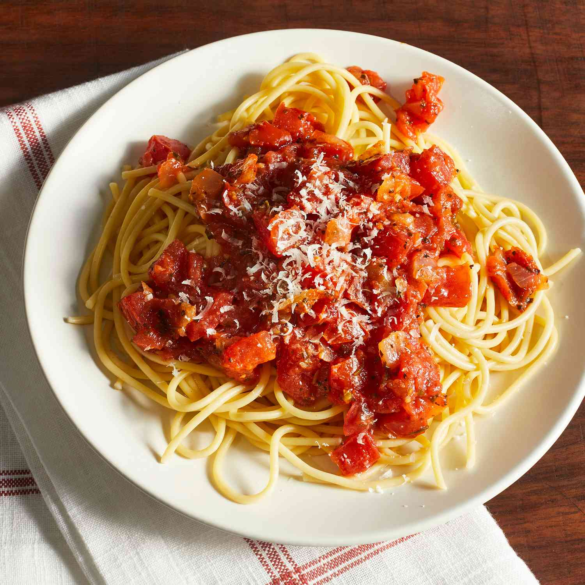

Spaghetti
Home

Description
This is an Italian favorite that your family will love!
Ingredients
- 2 tbsp olive oil, plus extra to toss
- 1 onion, finely chopped
- 3 garlic cloves, crushed
- 3 tbsp tomato paste
- 2 x 410g cans crushed tomatoes
- 500g spaghetti
- 500g marinara mix (see Notes)
- 2 tbsp chopped flat-leaf parsley
- Salt, to season
Steps:
- Heat oil in a large saucepan over medium heat, add onion and
cook for 3-4 minutes or until softened.
- Add garlic and wine, and simmer 2 minutes. Add paste and
crushed tomatoes, and simmer 15-20 minutes further, stirring
occasionally until slightly thickened. Season well.
- Meanwhile cook the pasta in boiling, salted water until al
dente. Drain and toss in a little olive oil.
- Add marinara mix and mussels to tomato sauce, cover with lid
and cook 3-4 minutes over medium-high heat, discarding any
mussels that do not open.
- Stir in parsley, then toss the sauce through the pasta and
serve.